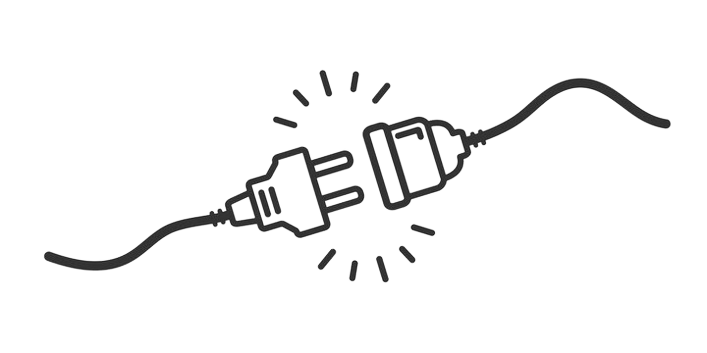

<div class="container">
  <div class="row">
      <div class="col">
          
      </div>
      <div class="w-100" *ngIf="mobilni"></div>
      <div class="col d-flex align-items-center justify-content-center">
          <div class="">
          <h2>Хоће сервер да погреши једном, али не 100 пута.</h2>
          <h6>Можда сте добили погрешан сервер, али сте добили страницу коју сте тражили.</h6>
            <div id="">
              Није Вам јасно како нема странице? Кликните <a class="text-danger" id="ovde" (click)="prikazi()">овде</a>.
            </div>
          </div>
          <div class="{{prikazi_div ? '':'d-none'}} d-flex justify-content-center float-center" id="video" *ngIf="!mobilni && vid==0">
            <video class="w-75" src="../../assets/audio_and_video/404{{tip()}}.mp4" autoplay *ngIf="prikazi_div" (ended)="videoGotov()"></video>
          </div>
    
      </div>
      <div class="{{prikazi_div ? '':'d-none'}} d-flex justify-content-center float-center" id="video" *ngIf="mobilni && vid==0">
        <video class="w-100" src="../../assets/audio_and_video/404{{tip()}}.mp4" autoplay *ngIf="prikazi_div" (ended)="videoGotov()"></video>
        </div>
       
  </div>
</div>

